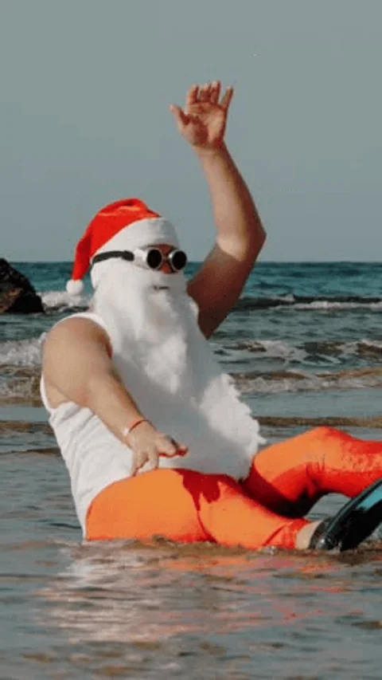
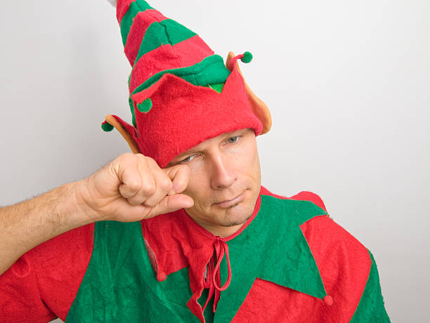
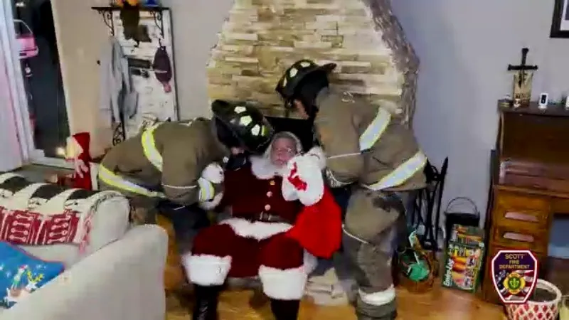
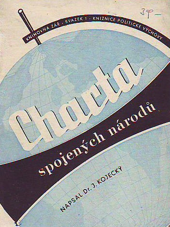
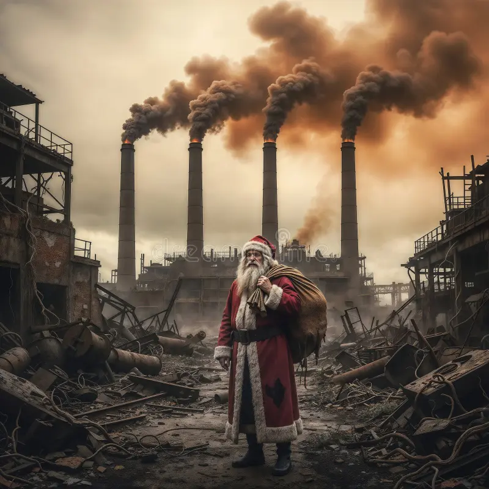
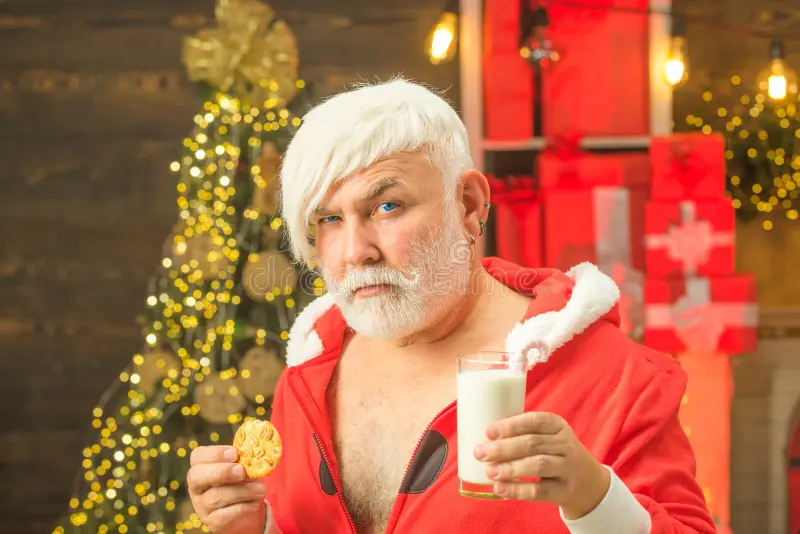
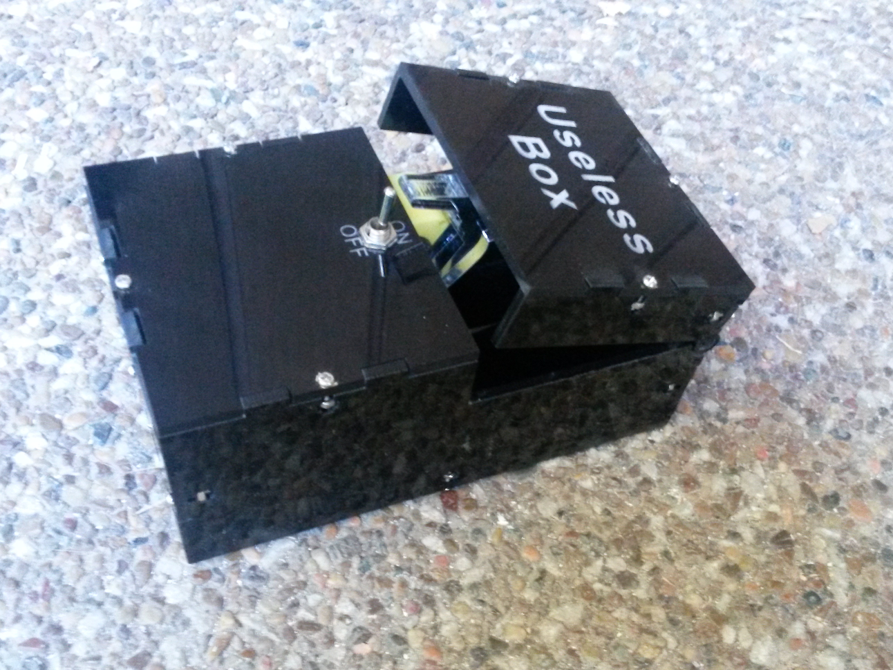

Co nedělat o Vanočních prázdninách
Nebuď jako On!

Nevyužívejte nucené práce
I když jsou skřítci tradičně zobrazováni jako věčně usměvaví,
práce 24/7 v dílně bez odborů a volna zavání severopolárním vykořisťováním.
Vánoční atmosféra by neměla stát na porušování pracovního práva,
ani když jsou zaměstnanci pohádkoví.

Nezneužívejte práce divoké zvěře
Sob není pracovní stroj, ale živý tvor.
Tahání saní přes půl planety v mrazu
bez jasné pracovní smlouvy
a bezpečnostního školení je eticky přinejmenším sporné.

Nevkrádejte se lidem do domu bez jejich souhlasu a to ani komínem
Vniknutí do obydlí v noci, v červeném kabátě a s pytlem přes rameno,
by bylo za běžných okolností důvodem volat policii.
Tradice netradice, domovní svoboda by měla platit i na Štědrý večer.

Neokupujte území, která vám právoplatně nepatří.
Severní pól není bezprávná zóna jen proto, že tam nikdo trvale nebydlí.
I Santa by měl respektovat mezinárodní právo a územní suverenitu,
a ne si prostě „zabrat“ kus Arktidy.

Nezakládejte průmyslové areály v ekologicky citlivých oblastech
Masová výroba hraček uprostřed tání ledovců úplně nekoresponduje s ochranou klimatu.
Ekologická stopa Vánoc by neměla zahrnovat zničený arktický ekosystém.

Nejezte lidem jejich půlnoční svačinku
Sušenky a mléko jsou hezké gesto, ne povinný poplatek za doručení dárků.
Navíc ne všichni chtějí, aby jim cizí osoba ujídala zásoby připravené na noc.

Neposílejte své sluhy stalkovat malé děti
Systém „byl jsi hodný, byl jsi zlobivý“ založený na neustálém sledování je spíš dystopie než pohádka.
Děti by neměly žít s pocitem, že je někdo celý rok špehuje.

Necpěte dětem zbytečné dárky, které stejně zahodí
Hromady plastových hraček, které přestanou bavit do tří dnů, dělají radost hlavně výrobcům odpadu.
Méně dárků a víc smyslu by potěšilo děti, rodiče i planetu.

odkaz